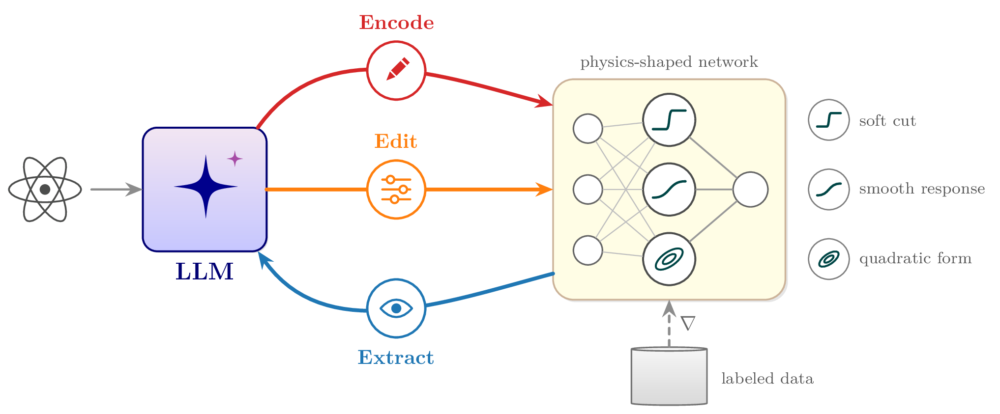
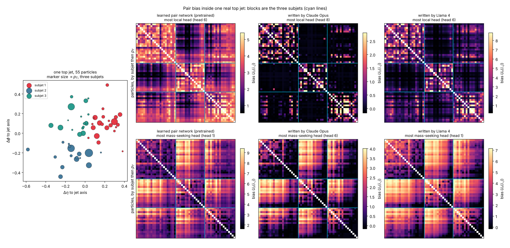
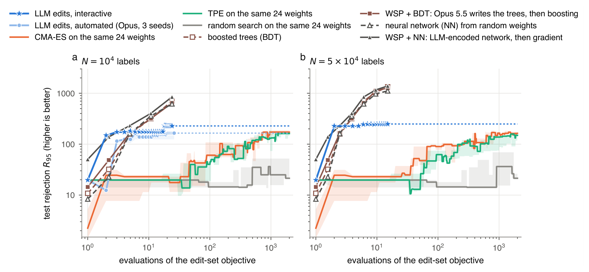
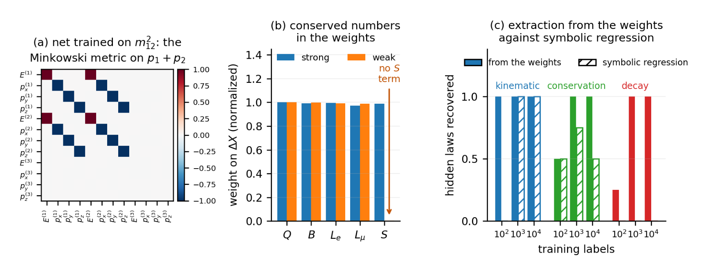
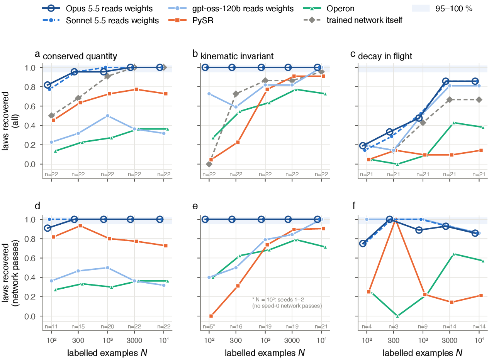

Weight-Space Programming with Large Language Models for High Energy and Nuclear Physics

Abstract
Jet taggers pretrained on a hundred million or more simulated jets have become a common starting point for analyses in high energy and nuclear physics. Adapting them to a new task still relies on gradient fine-tuning, which requires labeled data and compute for every task, while the physics knowledge of the analyst reaches the weights only indirectly. Weight-space programming (WSP), in which a large language model (LLM) writes and edits network weights directly, has recently emerged as an alternative to training. In this work, we introduce physics-shaped WSP, in which the LLM operates on weights with an explicit physical meaning, and establish it on the pretrained Particle Transformer and OmniLearned taggers. The framework comprises three operations: the LLM (i) edits weights directly from diagnostics, without gradient steps, (ii) encodes physics knowledge into weights as an inductive bias, and (iii) extracts governing laws from trained weights.
For top tagging, a training-free edit that rebuilds the output layer of the Particle Transformer from its pretrained class rows reaches a background rejection that fine-tuning attains only with several hundred thousand labeled jets, and an edit made before fine-tuning OmniLearned on a thousand jets triples the rejection. Frontier LLMs find these edits from the diagnostics, improve on a fixed two-row rule where more than two rows matter, and succeed where black-box search fails. Furthermore, the same operations extend beyond jet tagging: encoded selections of K0S decays act as a prior worth several times the labeled data, direct edits match black-box optimizers with up to two orders of magnitude fewer evaluations, and frontier LLMs read nearly every hidden law captured by a small law-shaped network in a blind benchmark of 65 laws. These results establish weight space as a practical interface between physics knowledge and learned models.
Three operations on the same weights
Encode
The LLM writes physics knowledge into the weights as an inductive bias, using no data. Controls: networks trained from random weights, boosted trees and a particle-flow network.
Edit
The LLM reads diagnostics and changes the weights directly, with no gradient step. Controls: CMA-ES, TPE and random search, and fine-tuning.
Extract
The LLM reads a trained network's weights and states the law it learned, without seeing the data. Controls: PySR and Operon.
The automated runs cover six LLMs with no human in the loop, from small open-weight models to Claude Opus 5.5 and Sonnet 5.5.
Results
Physics knowledge as an inductive bias
Across four tasks, starting from LLM-encoded weights is worth several times the labeled data. Pair interactions written by an LLM from physics alone, used as a frozen attention bias, improve a transformer trained on 10³ top-tagging jets as much as the pair interaction the Particle Transformer learned from 10⁸ jets. When their physics is scrambled, most of that gain disappears.


Direct weight editing
On a K0S selection, direct LLM edits reach the background rejection of CMA-ES, TPE and random search on the same weights with up to two orders of magnitude fewer evaluations, and every edit is a physics statement. On heavy-ion jets, an edit restricted to the inputs the LLM predicted to be safe removes a bias that no training sample showed. On pretrained ParT and OmniLearned taggers, frontier LLM edits raise the rejection over plain fine-tuning on the same labels, both after fine-tuning and before it.


Physical laws from weights
The quadratic form of a network trained on an invariant mass reads exactly as the Minkowski metric. In a blind benchmark of 65 hidden laws (5 built from real particles, 60 drawn blind, most of them unphysical by design so they cannot be recalled), frontier LLMs reading only the weights recover nearly every law the network itself captured, far ahead of symbolic regression run directly on the labels.


Code and data
Every prompt, the code that builds the prompts, applies the answers to the weights and scores them, and the numbers behind every figure are in the repository. LLM editors and readers are isolated: each answers from a fresh context with only its prompt, and rounds and variants are chosen on held-back labels, never on test data.
Citation
@article{Jiang:2026wsphep,
author = {Jiang, Cheng and others},
title = {Weight-Space Programming with Large Language Models
for High Energy and Nuclear Physics},
year = {2026},
note = {arXiv number to follow}
}